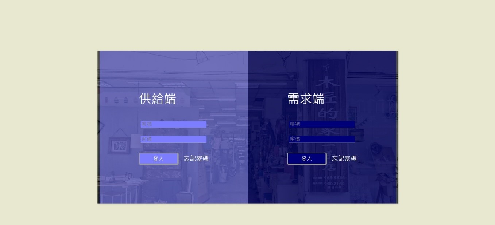

WinCube
西元1999年 由幾位中壢地區教會的會友及中原大學職員發起成立木匠的家關懷協會」 提供免費咖啡及英語自由談,營造一個青少年正當休閒活動的空間。
供給端
登入頁面
供給端及需求端需要經過我們詳細的審核過後，可以獲得我們登入的金鑰密碼

供給端
首頁
供給端
商品管理
可以在這看到供給商家自行上架的商品，也可以藉由上方搜尋頁面搜尋想看到的商品
供給端
上架商品
上架商品頁面，可以新增各種規格的商品，讓商品有更多細節可選擇，EX:綠色的特大水壺
供給端
訂單管理-即時訂單管理
貨運管理系統選取完商品訂單後，會顯示於此頁面
供給端
訂單管理-已完成訂單
商品成功運送到需求端，需求端也按下完成訂單後，此筆訂單會成為已完成訂單，便呈現於此
供給端
貨運管理系統
可以於此看見所有需求端所選取的商品已與使用者配對成功，而那些配對成功的商品會呈現於此，供給端可以藉由此系統管理出貨狀態
供給端
進帳管理
已完成訂單的所有商品款項將呈現於此
供給端
績效分析
供給端可以藉由這些銷售數據，對自己的商場擬定銷售策略
Made by WinCube